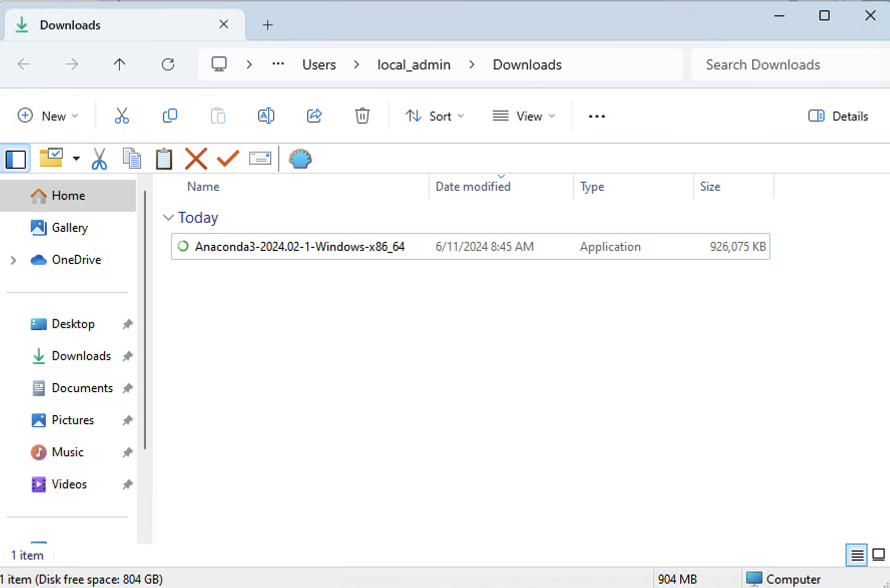
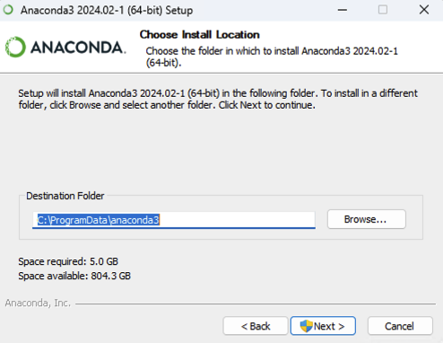
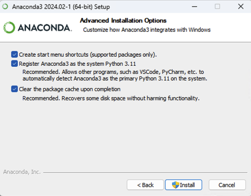

~ END Installation Guide ~

Incoming MEDS students should follow the steps detailed in this software installation guide before summer orientation – there will be a dedicated troubleshooting session during orientation, should you need help completing any of the installations.
Please carefully read through the computing requirements & recommendations section before deciding on what computer to purchase / use ahead of MEDS.
Visit cloud.r-project.org to download the most recent version of R for your operating system. You should have at least version 4.4.0 (released 2024-04-24) running when you start MEDS.
While R is a programming language, RStudio is a software (often referred to as an IDE, Integrated Development Environment) that provides R programmers with a neat, easy-to-use interface for coding in R. There are a number of IDEs out there, but RStudio is arguably the best and definitely most popular among R programmers.
RStudio will not work without R installed, and you won’t particularly enjoy using R without having RStudio installed. Be sure to install both!
Image Credit: Exploratory Data Analysis in R, by Manny Gimond
New install: To install RStudio, visit rstudio.com/products/rstudio/. Download the free (“Open Source Edition”) Desktop version for your operating system. You should install the most up-to-date version available that is supported by your operating system.
Update: If you already have RStudio and need to update, open RStudio, and under Help (in the top menu), choose Check for updates. If you have the most recent release, it will return No update available. You are running the most recent version of RStudio. Otherwise, you should follow the instructions to install an updated version.
Open RStudio (click on the logo shown below):

If upon opening RStudio you are prompted to install Command Line Tools, do it.
xcode-select --install in the RStudio Terminal(Note for Windows users: Windows machines should already have command line tools installed, and XQuartz is only required for Macs).
Quarto is a scientific publishing tool built on Pandoc that allows R, Python, Julia, and ObservableJS users to create dynamic documents, websites, books and more.
Quarto is included with RStudio v2022.07.1+ so there no need for a separate download/install if you have the latest version of RStudio! You can find all releases (current, pre, and older releases) on the Quarto website download page, should you want/need to reference them.
You should already have git on your device, but let’s check for it anyway.
Open RStudio
In the Terminal, run the following command (choose the option for your operating system):
RStudio Terminal
which gitRStudio Terminal
where git/usr/local/bin/git on a Mac, C:\Program Files\Git\mingw64\bin\git.exe on Windows, though it could differ slightly on your computer), then you have git installed. If you instead get no response at all, you should download & install git here: git-scm.com/downloadsGitHub’s Git Guides are a really wonderful resource to refer to!
RStudio Terminal
git config --global user.name "Jane Doe"
git config --global user.email janedoe@example.comRStudio Terminal
git config --list --globalRStudio Terminal
git config --global credential.helper 'cache --timeout=10000000'This prevents important credentials (e.g. a GitHub Personal Access Token, PAT, which you’ll set in step #7) from being removed from the server’s memory. You do not need to complete this step when configuring git on your local computer.
First: What even is a personal access token? From GitHub’s documentation:
Personal access tokens (PATs) are an alternative to using passwords for authentication to GitHub when using the GitHub API or the command line.
This means that in order to push your work (files, scripts, etc.) from your laptop (or any other computer) to GitHub, you’ll need to first to generate a PAT. Importantly, you’ll need to generate a PAT for each computer you wish to work from. For example, we will complete the following steps to create a PAT for your personal laptop, but you’ll also need to create a PAT if/when you choose to work on a second computer at home or any of the Bren servers. Good news is that you can follow these same steps when you’re ready to set up additional PATs on other machines. For now, let’s get a PAT for our personal laptop squared away:
{usethis} package in R by running the following in the RStudio Console:RStudio Console
install.packages(“usethis”)A lot of scary looking red text will show up while this is installing - don’t panic. If you get to the end and see something like below (with no error) it’s installed successfully.

RStudio Console
usethis::create_github_token() 
In the Note field, you should see some autopopulated text: R:GITHUB_PAT. We suggest changing this to something that signifies what machine it’s being used for. For example, if you are generating a PAT for your laptop, you might choose to rename it, My Personal Laptop.
Next, you’ll see a section called Select scopes with reasonable options already selected for you. Do not change anything. Just scroll down to the bottom of that page and click the green Generate token button:

Copy the generated PAT to your clipboard
Back in RStudio, run the following in the Console:
RStudio Console
gitcreds::gitcreds_set()This will prompt you to paste the PAT you just copied from GitHub. Paste the PAT, press Enter to run. You should see something like this show up if all is well so far (you’ll have pasted your PAT where the example below says “REDACTED”):

RStudio Console
usethis::git_sitrep()Does it return information about your connected GitHub account that looks something like below? Great! You’ve configured git and successfully stored your PAT.

Setting an expiration date on personal access tokens is highly recommended in order to keep your information secure. GitHub will send you an email when it’s time to regenerate a token that’s about to expire. Follow the email prompts, then use gitcreds::gitcreds_set() to reset your token.
Anaconda is a distribution of the Python and R programming languages that aims to simplify package management and deployment. You’ll need to download the Graphical Installer, which provides a graphical user interface (GUI) to facilitate writing code. Choose the option for your operating system:
Click here to download 64-bit Graphical Installer for MacOS. This might pop open a new tab with a “redirecting you to…” phrase, but Anaconda should be downloading at the same time. It might take a couple minutes. After it’s downloaded, click it and hit Allow if you see the following:

Follow the installation steps to complete Anaconda installation.
Click here to download the 64-bit Graphical Installer Anaconda for Windows. Run the executable to install, which will look something like this:



Visual Studio Code (aka VS Code) is a language-agnostic source-code editor – it’s works similarly to RStudio, but allows users to install extensions which add support for lots of different languages, debuggers, tools, etc. Download VS Code for your operating system here.

Cyberduck is a program that allows you to browse files on a remote server. Download here.
For secure remote access to the UCSB’s campus network when you’re not physically present on campus, you’ll need to download and install the Pulse Secure VPN client. This will allow you to access UCSB’s technology resources (including servers, journal subscriptions, etc.) anytime and from anywhere.
See this Bren Zendesk article for directions on how to get started.
Click here to join our UCSB-MEDS Slack Workspace
Customize your profile with your name and photo (adding a photo helps instructors and TAs learn your names more quickly!).
Join the summer course channels (#eds-212, #eds-221, #eds-214, #eds-217)
Once enrolled and your UCSBnetID is activated, you will have access to your UCSB Connect Account which provides email, calendaring, and collaboration services. You must use this account (UCSBnetID@ucsb.edu) to log in and access all of your Google Apps (including Google Calendar, Google Drive, etc.).
The MEDS Google Calendar contains all classes and events relevant for our MEDS students. Feel free to add this to your calendar if you find it helpful. To do so, log in to Google Calendar using your @ucsb.edu credentials > Click on the + next to “Other calendars” on the left-hand side of your screen and choose “Browse resources” > Click the drop down arrow next to “bren” and check the box next to “bren-calendar-meds”
New students must request an Access ID Card (aka your UCSB photo identification), which are available for pickup at the UCEN 24 hours after your request is made. We recommend submitting your request before summer orientation, so that it’s ready for pickup during your first day on campus.
Once you receive your Access ID Card, you must complete this form to gain key card access to Bren (after hours) and NCEAS (all hours).
~ END Installation Guide ~
The MEDS program requires all students to have a personal laptop to use during the program. Our curriculum is designed to work across different operating systems and computers, as long as they meet some minimum requirements.
If you already have a laptop that you plan to use in MEDS, be sure to install the latest operating system before the program begins:
We recommend:
You can purchase a Macbook Air using the higher education discount for $899 before tax and AppleCare. A PC can cost anywhere from $500 to more than $3,000; you generally get what you pay for.
If your computer breaks or dies, we can typically loan you a Windows laptop for up to a month (which should be long enough to have your computer repaired or to purchase a new one).
You may consider having a dedicated computer setup that includes an external monitor, keyboard, and / or mouse at home. A stable at-home WiFi connection is necessary for completing work remotely (i.e. off-campus).
~ END Computing Requirements & Recommendations ~